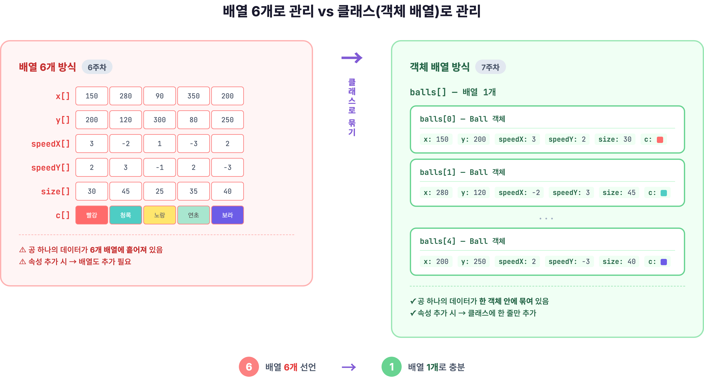
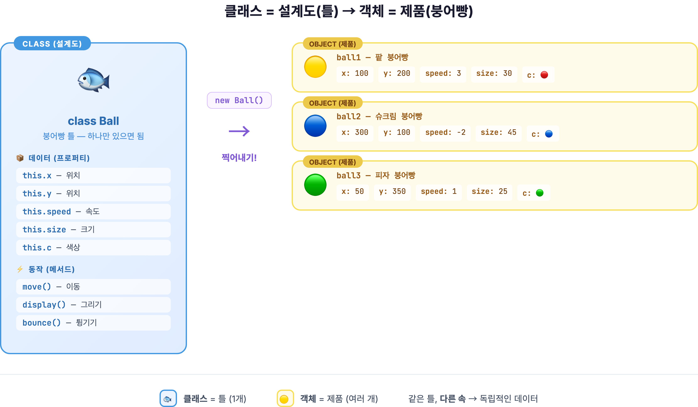
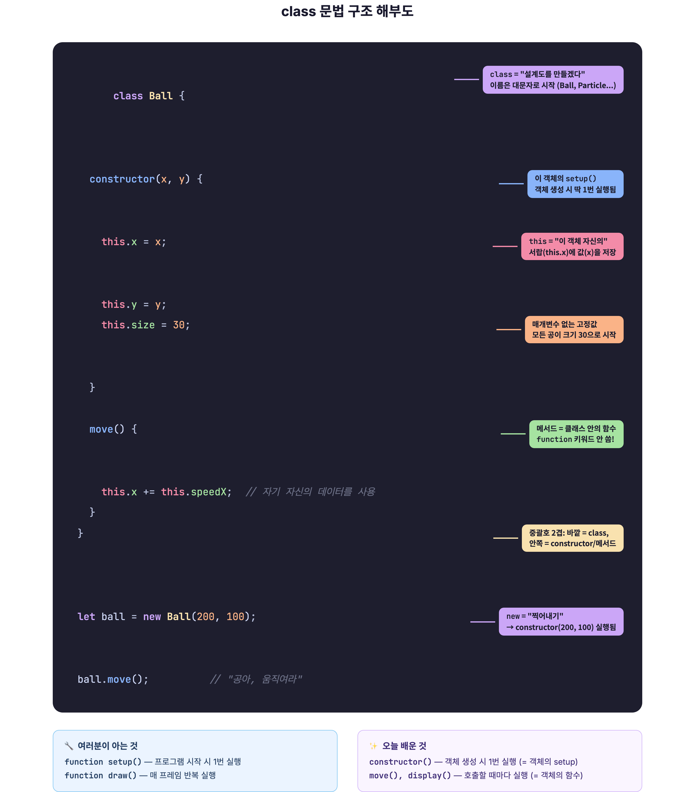
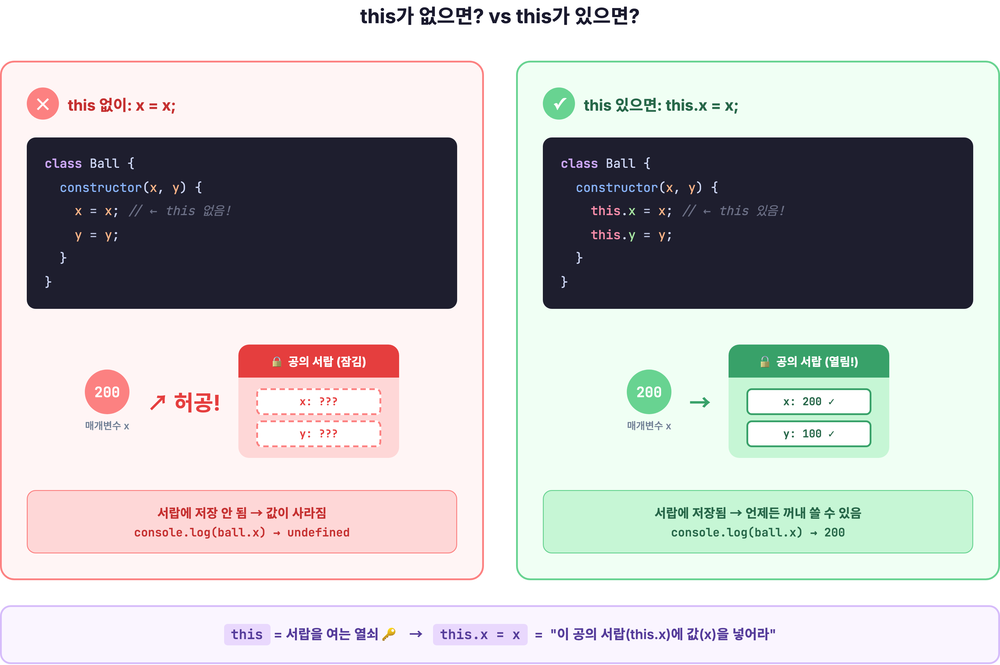
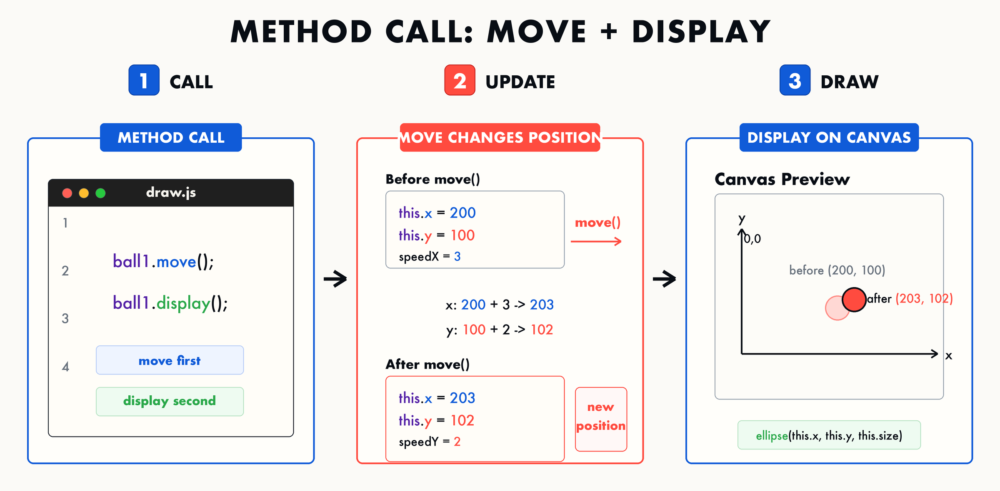

7주차 1교시 — 왜 클래스가 필요한가 + class 기본 문법
강의 아웃라인: week-07-outline 다음 교시: week-07-period2-student (객체 배열과 클래스 확장)
| 항목 | 내용 |
|---|---|
| 대상 | P5.js 입문자 (테크아트 전공) |
| 소요 시간 | 45분 |
| 핵심 도구 | P5.js Web Editor |
- 객체지향 프로그래밍(OOP)의 핵심 개념을 이해하고, 왜 클래스가 필요한지 설명할 수 있습니다
-
class문법(constructor, 프로퍼티, 메서드)을 사용하여 독립적인 객체를 정의할 수 있습니다 - 클래스로 바운싱 볼 객체를 만들고 화면에 표시할 수 있습니다
도입 — “배열의 한계” 단계별 체험
공 1개를 변수로 관리하기
6주차에서 공 하나를 움직이려면 변수가 6개 필요했습니다.
let x, y, speedX, speedY, size, c;
function setup() {
createCanvas(400, 400);
x = 200;
y = 200;
speedX = 3;
speedY = 2;
size = 30;
c = color(255, 100, 100);
}
function draw() {
background(220);
fill(c);
ellipse(x, y, size);
x += speedX;
y += speedY;
if (x > width || x < 0) speedX *= -1;
if (y > height || y < 0) speedY *= -1;
}공 하나에 변수 6개입니다. x, y, speedX, speedY, size, c.
공 3개를 만들려면 변수 18개가
필요합니다.
x1, y1, speedX1, ..., x2, y2, speedX2, ..., x3, y3, speedX3, ...처럼
계속 늘어납니다. 그래서 6주차에서 배열을
배웠습니다.
배열로 관리하면?

배열을 쓰면 다음과 같이 됩니다.
let x = [];
let y = [];
let speedX = [];
let speedY = [];
let size = [];
let c = [];변수 18개 대신 배열 6개로 줄었습니다. 하지만 공마다
투명도를 다르게 하려면 let alpha = [];,
회전 각도를 주려면 let angle = [];,
수명을 넣으려면 let life = [];처럼 배열이
계속 늘어납니다.
배열이 6개, 7개, 8개, 9개로 늘어나면 x[i]와
speedY[i]가 같은 공의 데이터라는 사실을 코드만 보고
바로 알기 어렵습니다.
이 문제를 해결하는 방법이 바로 오늘 배울 클래스(class)입니다.
동기부여
클래스는 설계도입니다. 공의 설계도를 한 번 만들면, 그 설계도로 공을 100개든 1000개든 찍어낼 수 있습니다.
미디어아트의 파티클 효과, 새떼 시뮬레이션, 인터랙티브 요소는 모두 클래스로 표현할 수 있습니다. 후반부(9~14주차)에서 배울 벡터, 힘, 파티클 시스템도 클래스 기반입니다. 오늘 내용은 이후 수업의 기반입니다.
핵심 개념 1 — 설계도와 제품
붕어빵 비유

| 비유 | 프로그래밍 |
|---|---|
| 붕어빵 틀 | 클래스(class) — 설계도 |
| 찍어낸 붕어빵 | 객체(object) — 설계도로 만든 실제 물건 |
| 팥, 슈크림, 피자 속 | 각 객체의 데이터 — 위치, 크기, 색상 |
| 먹는다, 따뜻하게 데운다 | 객체의 동작 — 이동, 그리기, 바운스 |
틀은 하나지만 붕어빵은 여러 개 찍어낼 수 있습니다. 각 붕어빵은 팥, 슈크림, 피자처럼 서로 다른 속을 가질 수 있습니다.
프로그래밍으로 옮기면: 클래스(class) = 설계도, 틀. 객체(object) = 설계도로 찍어낸 실제 물건입니다.
6주차에서 배열 6개로 흩어져 있던 데이터(x, y, speed…)를 하나의 설계도 안에 묶는 것이 클래스입니다.
배열 코드에서 공 하나의 x좌표는 x[i], 속도는
speedX[i]로 따로 관리했습니다. 이걸 클래스로 바꾸면 어떻게
될까요?
답: 하나의 Ball 객체 안에 x, speedX가 함께 들어갑니다.
핵심 개념 2 — class 기본 문법: 점진적으로 만들기
공(Ball)의 설계도를 처음부터 한 줄씩 만들어 보겠습니다.
Step A: 빈 클래스 — 껍데기부터

먼저 아무것도 없는 빈 설계도를 만들어 봅니다.
class Ball {
}가장 단순한 클래스는
class Ball { }입니다. ’Ball이라는 설계도를
만들겠다’는 뜻입니다.
구조를 보면 class 이름 { } — 중괄호 { }
안에 설계도의 내용을 넣습니다. 지금은 비어 있으니까 아무 기능도 없는 빈
설계도입니다.
클래스 이름은 대문자로 시작하는 것이 관례입니다.
ball이 아니라 Ball로 쓰면, 나중에
let ball = new Ball();처럼 클래스(대문자)와 변수(소문자)를
구분하기 쉽습니다.
이 상태에서도 let ball = new Ball();로 객체를 만들 수
있습니다. 다만 아직 데이터와 동작이 없는 빈 객체입니다.
Step B: constructor 추가 — “이 객체의 setup()”
빈 설계도에 초기화 코드를 넣어 봅니다.
class Ball {
constructor() {
}
}constructor() { }를 설계도 안에 넣었습니다.
constructor는 객체가 만들어질 때 실행되는
생성자입니다.
P5.js에서 setup() 함수는 프로그램이 시작될 때 딱
한 번 실행되는 함수입니다. constructor()도
똑같습니다 — 객체가 만들어질 때 딱 한 번 실행되는
함수입니다.
| 여러분이 아는 것 | 오늘 배울 것 |
|---|---|
function setup() { } |
constructor() { } |
| 프로그램 시작 시 1번 실행 | 객체 생성 시 1번 실행 |
| 캔버스 크기, 초기값 설정 | 이 공의 위치, 크기, 속도 설정 |
constructor() = 이 객체의
setup()입니다. 이 비유만 기억하면 됩니다.
6주차에서 함수에 매개변수를 넣었던 것처럼 constructor에도 똑같이 넣을 수 있습니다.
class Ball {
constructor(x, y) {
// 여기에 초기화 코드를 작성
}
}constructor(x, y) — 공을 만들 때 x좌표와 y좌표를
받겠다는 뜻입니다. 6주차에서
function drawFlower(x, y) { }에 매개변수를 넣은 것과
같은 원리입니다.
Step C: this가
왜 필요한지 — 실패 체험

constructor 안에 코드를 넣어 봅니다. 일부러 틀린 코드부터 살펴봅니다.
class Ball {
constructor(x, y) {
x = x; // this 없이!
y = y;
}
}
let ball = new Ball(200, 100);
console.log(ball.x); // undefined ← 저장 안 됐음!콘솔에 undefined가 나옵니다. ’정의되지 않았다’는
뜻입니다. 200을 넣었는데 왜 그럴까요?
x = x;는 매개변수 x를 자기 자신에 대입한 코드입니다.
공의 서랍에 값을 넣지 않습니다. 매개변수 x는
constructor가 끝나면 사라집니다.
이제 this를 붙여 봅니다.
class Ball {
constructor(x, y) {
this.x = x; // ← this 붙임!
this.y = y;
}
}
let ball = new Ball(200, 100);
console.log(ball.x); // 200 ← 저장됐다!this를 붙이면 200이 출력됩니다.
this는 ‘이 객체 자신’이라는
뜻입니다.
일상에서 자기소개할 때 ‘내 이름은 OO입니다’라고
말하듯, 코드에서는 this.name = 'OO'라고 씁니다.
this는’나 자신’입니다.
this.x = x는 ’이 공의
x좌표(this.x)를 매개변수로 받은 값(x)으로
설정한다’는 뜻입니다. this가 ’이 공의 서랍’을 열어주는
열쇠입니다. this 없으면 서랍에 저장이 안
됩니다.
= 기호 왼쪽의 this.x는 저장할
장소(이 공의 서랍), 오른쪽의 x는 넣을
값(밖에서 받아온 값)입니다. 이름이 헷갈리면 왼쪽은 저장 위치,
오른쪽은 값으로 구분하세요.
Step D: 고정값 프로퍼티 추가
x, y는 매개변수로 받았습니다. 그런데 매번 같은 값인 데이터는 어떻게 할까요? 예를 들어 공 크기를 항상 30으로 하고 싶다면 다음과 같이 합니다.
class Ball {
constructor(x, y) {
this.x = x;
this.y = y;
this.size = 30; // ← 매개변수 없이 고정값!
}
}this.size = 30; — 매개변수로 받지 않고, 고정값 30을 직접
넣었습니다. 모든 공이 처음에는 크기 30으로 만들어집니다.
매개변수로 받을지, 고정값으로 둘지는 우리가 정합니다. 위치는 공마다 다르게 하고 싶으므로 매개변수로 받고, 크기는 같게 하고 싶으므로 고정값으로 둘 수 있습니다.
이렇게 객체에 저장된 데이터 — this.x,
this.y, this.size — 를 공식 용어로
프로퍼티(property)라고 부릅니다. ’속성’이라는
뜻입니다.
Step E: 객체 만들기 —
new 키워드
설계도가 완성되었으니, 이제 실제 공을 찍어 봅니다.
let ball1 = new Ball(200, 100);
let ball2 = new Ball(300, 250);new Ball(200, 100) — ‘Ball 설계도로 새 객체를
만들어라. x는 200, y는 100으로.’
new는 설계도로 새 객체를 만드는
동작입니다. new를 쓰면 constructor가 실행되고, 그
안에서 this.x = 200, this.y = 100,
this.size = 30이 설정됩니다.
ball1과 ball2는 같은 설계도(Ball)에서
나왔지만, 서로 다른 위치를 가진 별개의 객체입니다.
Step F: 데이터 확인하기 —
점(.) 표기법
console.log(ball1.x); // 200
console.log(ball2.x); // 300
console.log(ball1.size); // 30객체의 프로퍼티에 접근할 때는 점(.)을
씁니다. ball1.x — ‘ball1의 x좌표’. ball2.x —
‘ball2의 x좌표’. 각각 독립적인 값입니다.
값을 바꿀 수도 있습니다. ball1.size = 80;을 하면 ball1만
커지고, ball2는 여전히 30입니다. 각 객체는 자기만의 저장 공간을
가집니다.
new Ball(50, 300)으로 ball3를 만들면,
ball3.x와 ball3.y는 각각 무엇일까요?
답: 50과 300입니다. constructor에서
this.x = x, this.y = y를 실행하기
때문입니다.
미니 실습 — 직접 따라 쳐보기
P5.js 웹 에디터를 열고 다음 코드를 한 줄씩 따라 쳐 봅니다.
class Ball {작성 — 엔터constructor(x, y) {작성 — 엔터this.x = x;작성 — 엔터this.y = y;작성 — 엔터this.size = 30;작성 — 엔터}작성 — constructor 닫기 — 엔터}작성 — class 닫기 — 엔터 두 번let ball = new Ball(200, 100);작성 — 엔터console.log(ball.x);작성 — 엔터console.log(ball.size);작성
class Ball {
constructor(x, y) {
this.x = x;
this.y = y;
this.size = 30;
}
}
let ball = new Ball(200, 100);
console.log(ball.x); // 200이 나오면 성공!
console.log(ball.size); // 30이 나오면 성공!실행하여 콘솔에 200, 30이 나오면 성공입니다.
class ball(소문자), contructor 오타,
this 빠뜨림, 중괄호 } 빠뜨림 — 이 네 가지가
가장 흔합니다. 에러가 나면 먼저 이 부분을 확인하세요.
핵심 개념 3 — 메서드: 동작 추가하기
지금 Ball 클래스에는 데이터(프로퍼티)만 있습니다. 이 공이 할 수 있는 동작을 추가해 봅니다.
display() — 자기 자신을
그리기
6주차에서는 function drawFlower(x, y, size) { ... }처럼
함수를 만들었습니다. 클래스 안에도 함수를 넣을 수 있으며, 이를
메서드(method)라고 부릅니다.
차이점은 function 키워드를 쓰지 않고,
매개변수 대신 this에 저장된 데이터를
사용한다는 점입니다.
class Ball {
constructor(x, y) {
this.x = x;
this.y = y;
this.size = 30;
}
display() { // ← 여기 추가!
ellipse(this.x, this.y, this.size);
}
}display() — 이 공을 화면에 그리는 메서드입니다.
ellipse(this.x, this.y, this.size) — 자기
자신의 위치와 크기로 원을 그립니다.
6주차에서 drawFlower(x, y, size)처럼 매개변수를
넘겼습니다. 클래스에서는 this에 이미 저장되어 있으니까
매개변수 없이 display()만 호출하면
됩니다.
move() — 자기 자신을
이동시키기
이동 기능도 추가합니다. constructor에 속도 매개변수도 같이 추가합니다.
class Ball {
constructor(x, y, speedX, speedY) { // ← 속도 추가!
this.x = x;
this.y = y;
this.speedX = speedX;
this.speedY = speedY;
this.size = 30;
}
move() { // ← 여기 추가!
this.x += this.speedX;
this.y += this.speedY;
}
display() {
ellipse(this.x, this.y, this.size);
}
}move()는 자기 자신의 위치를
자기 자신의 속도만큼 이동시킵니다. 5주차의
x += speed;가 this.x += this.speedX;로 바뀐
형태입니다. this가 붙었을 뿐, 논리는 같습니다.
메서드 호출
let ball1 = new Ball(200, 100, 3, 2);
ball1.move(); // ball1이 이동
ball1.display(); // ball1이 화면에 그려짐
메서드 호출도 점(.)을 씁니다.
ball1.move() — ‘ball1아, 움직여라.’
ball1.display() — ‘ball1아, 너를 그려라.’ 마치
명령을 내리는 것처럼 읽힙니다.
클래스 안에서 함수를 정의할 때 function 키워드를 쓸까요
안 쓸까요?
답: 안 씁니다! move() { ... }로
바로 씁니다.
핵심 개념 4 — setup()/draw()에서 조립하기
이제 전체 코드를 조립해서 실제 움직임을 확인합니다.
전체 코드 — Ball 클래스 + setup/draw
class Ball {
constructor(x, y, speedX, speedY) {
this.x = x;
this.y = y;
this.speedX = speedX;
this.speedY = speedY;
this.size = 30;
}
move() {
this.x += this.speedX;
this.y += this.speedY;
}
display() {
fill(100, 150, 255);
noStroke();
ellipse(this.x, this.y, this.size);
}
}
let ball;
function setup() {
createCanvas(400, 400);
ball = new Ball(200, 200, 3, 2);
}
function draw() {
background(220);
ball.move();
ball.display();
}실행하면 파란 원이 오른쪽 아래로 움직입니다. 화면 밖으로 나가는 문제는 2교시에서 바운싱을 추가해 해결합니다.
draw() 안에는 ball.move(),
ball.display() 두 줄만 있으면 됩니다. 이동
논리와 그리기 논리는 클래스 안에 들어 있습니다.
배열 코드 vs 클래스 코드 비교
| 배열 방식 (6주차) | 클래스 방식 (7주차) |
|---|---|
x[i] += speedX[i]; |
ball.move(); |
| “i번째의 x에 i번째의 속도를 더해라” | “공아, 움직여라” |
| 데이터와 동작이 분리됨 | 데이터와 동작이 하나로 묶임 |
클래스를 쓰면 코드가 영어 문장처럼 읽힙니다.
정리
핵심 3줄 요약
| 개념 | 핵심 | 코드 |
|---|---|---|
| 클래스와 객체 | 클래스 = 설계도, 객체 = 제품 | class Ball { } / new Ball() |
| constructor와 this | constructor = 초기화, this = “이 객체의” | constructor(x) { this.x = x; } |
| 메서드 | 클래스 안의 함수 = 동작 | move() { this.x += this.speedX; } |
자주 하는 실수 Top 3
this.x = x;를 x = x;로 쓰면 → 객체에 저장
안 됨 → undefined
클래스 밖에서는 function draw() { }, 클래스 안에서는
move() { } — function은 쓰지 않습니다.
let ball = Ball(200, 100);이라고 쓰면 에러. 반드시
new Ball(200, 100).
이 세 가지만 주의하면 에러의 80%는 피할 수 있습니다.
2교시 예고
공 2개까지 만들었습니다. 100개를 만들려면 6주차에서 배운 배열과 클래스를 결합하면 됩니다. 2교시에서는 바운싱을 추가하고, 클릭하면 공이 생기는 인터랙션도 넣어 봅니다.